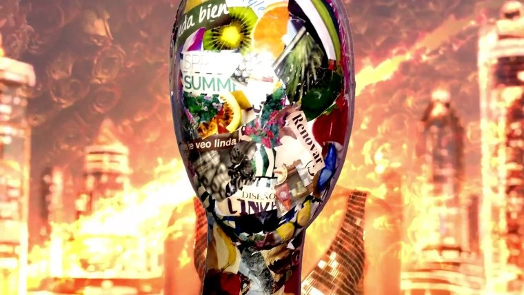
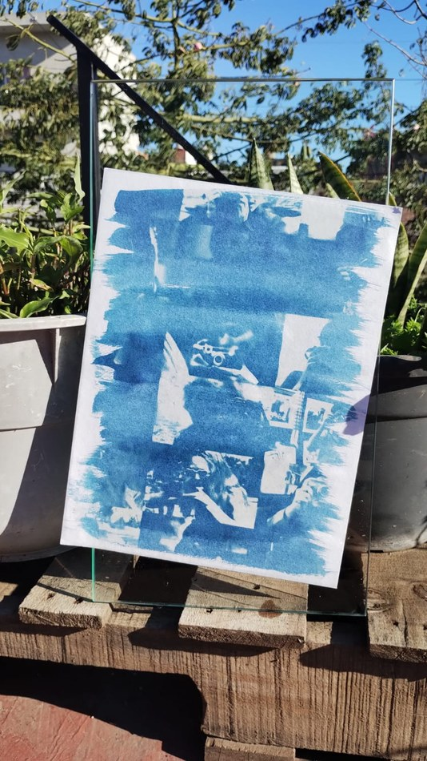
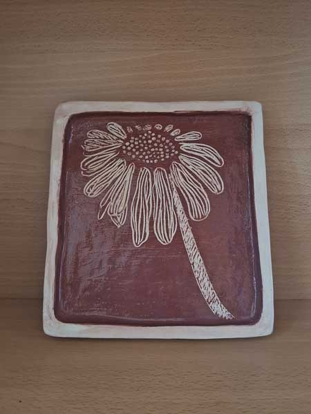

Alan Verruá
Video y rotoscopia
Colectivo de artes multimediales — 2026
VETA reúne el trabajo de Alan Verruá, Florencia Olivera y Fiorella Carretino: video, rotoscopia, fotografía, cianotipia e imagen digital reunidas en un mismo cuerpo de obra.
Alan Verruá
Video y rotoscopia
Florencia Olivera
Imagen e impresión
Fiorella Carretino
Fotografía digital

01 Video y rotoscopia
Trabaja sobre la imagen en movimiento: rotoscopia de frames, collage y proyectos visuales donde el color y el montaje construyen el relato. Su pieza De Construcción es el punto de partida de esta web.

02 Imagen e impresión
Construye personajes y escenarios para el cortometraje Uña y carne, y lleva ese mismo gesto al papel: fotocollage analógico, foto-libro y cianotipia como soporte de su trabajo audiovisual.

03 Fotografía digital
Una serie fotográfica de dieciséis piezas que sigue el detalle y la luz de la ciudad: naturaleza y objetos cotidianos convertidos en material de trabajo, con una mirada sostenida a lo largo de toda la serie.
—